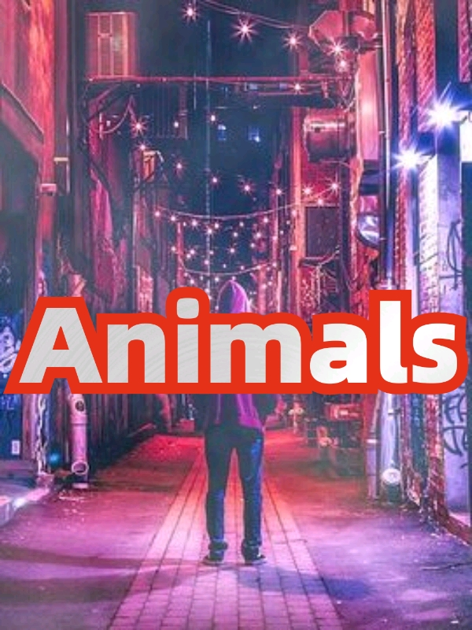

《Animals》的大纲
寒假打工摸鱼摸出一本小说🦄
书名《Animals》
笔名 神歼
简介 2023年的某天，地球上的人类突然发现自己多了类似于心灵感应的能力，经过科学家、神学家以及哲学家的研究，一致认为是地球上人类的总能量太高，觉醒了异能，科技的爆发式增长引起了能量的畸变，如果十年内不能找到能量值最高的人来领导人类，过高的总能量将导致全球范围内未知的心理疾病，可能引起人类灭绝。
时间 2023至十年后
地点 华夏
人物
主角 叶铭天 大一学生，BD患者。当附近的人和自己想说的话一样时，能听到对方的心声，升级后的能力是可以吸收别人的能量并产生反哺。沉迷于DIY，编程，音乐，拳击，跑酷，和妹子聊天不可自拔
女主 叶深蓝 双亲去世，父母留下巨额遗产。后来被发现是叶铭天老年时制造的机器人，通过时光机器发送到叶铭天大一时的身边，但和人类一样拥有独立的人格且对此事一知半解。能听懂猫的心声。
宠物 夏娃 一只神经过敏的黑色母猫，因为叶铭天不会养猫，一直把它关在笼子里，所以夏娃对陌生人和外界环境过敏。后来发现它吸收了主人高额的能量，可以传导给抚摸它身体的人
Animals等级定义
微生物（1-3级）
小动物（4-6级）
大动物（7-9级）
超级动物（10级）
大纲
超级动物（10级）
为了筛选和培育拥有最高能量的地球领导人，各个国家组织建立了人类觉醒联盟，让各个大国将学校制度改成动物进阶试炼（Animals advanced trial），试炼失败者继续去已做好衔接工作的学校上学。
试炼过程全球直播，观看与讨论AA试炼成为了现代人最流行的娱乐，微生物（1-3级）主要考验人的外在与外物，小动物（4-6级）主要考验人的身体和能力，大动物（7-9级）主要考验人的内心与品质，超级动物（10级）需要完成超难的挑战，超级动物试炼是各个大国第一名之间的比赛，从中胜出者，就是拯救地球的那个人。
叶铭天对外界的压力本能的抗拒，但是与小深的遇见，让他与小深在通过微生物试炼的同时成为了热门人物，也让他思考起了AA试炼的意义。
日常的拳击训练与极限运动爱好，让他轻松地度过了小动物试炼。大动物试炼，寸步难行的同时，叶铭天用小深对自己的一往情深赢得了胜利。
超级动物试炼，叶铭天遇到最强对手阿波罗，他的能力是预见未来。一路的试炼，叶铭天被迫从那个独善其身的死小孩成长为一个天下兴亡匹夫有责的有家之人。
叶铭天意识到若他拿到地球领导人的位置，他要背负的不仅是家庭的责任，还有民族以及人类的兴亡，同时他也将成为前无古人后无来者的人类第一。
虽然阿波罗用能力赢得了第一，但是叶铭天被发现拥有不可思议的能力，于是官方将叶铭天推选为地球主领导人，阿波罗作为副手。叶铭天作为形象代表，阿波罗作为执行官，人类似乎免除了一场灾难，但是经过仔细推算，按照当今科技发展的势头，人类的总能量似乎以67年为周期循环，也就是说，2090，2157...人类每隔67年就将迎来类似的灾祸，而此时叶铭天已在人间赢得无法被时间掩没的人气，为了人类永久的和平，他会做出什么……
正文节选
IAA的AA试炼遥远的就像世界上另一个人做的梦。叶铭天自己也想不到更好的方法来培育和筛选地球首领，但是如此生硬粗暴的下通知让叶铭天感觉像是小学做错事被班主任下令抄书。
如果他是IAA的领导，先会花几年的时间打造出和AA试炼有关的书籍，音乐，电影，游戏等娱乐文化，让通过试炼拯救人类的观念深入人心，然后精简AAT在最短的时间内找到一个凑合过去的人，最后花几年时间狂欢，在叶铭天的想法里，拯救地球不是一个人类最强者独自的任务，而是一场全人类的泄火，就像是全球直播的大型娱乐节目。
如果不是眼前的狼人杀，叶铭天现在就要把这个千秋大计做好策划案呈递给国家政务机关，但是现在只能乖乖的摘下眼镜，用手捂住了眼。
